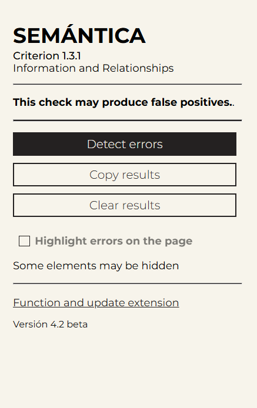
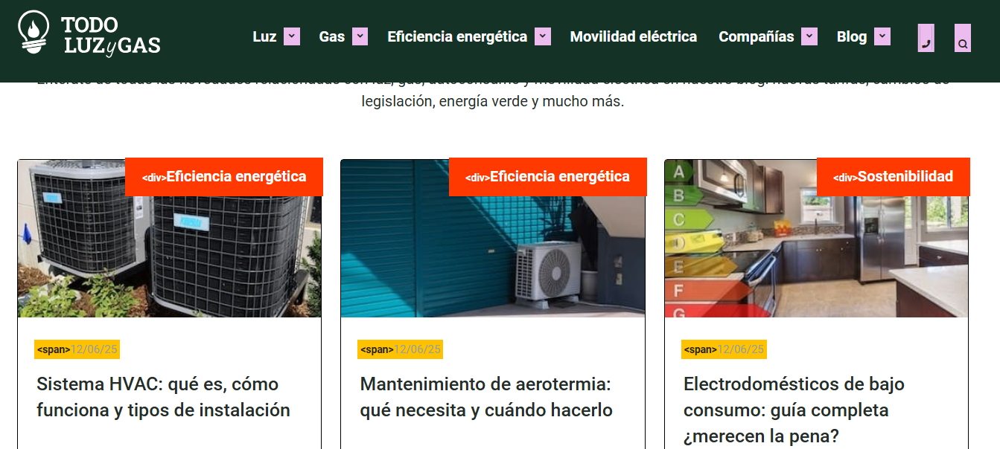
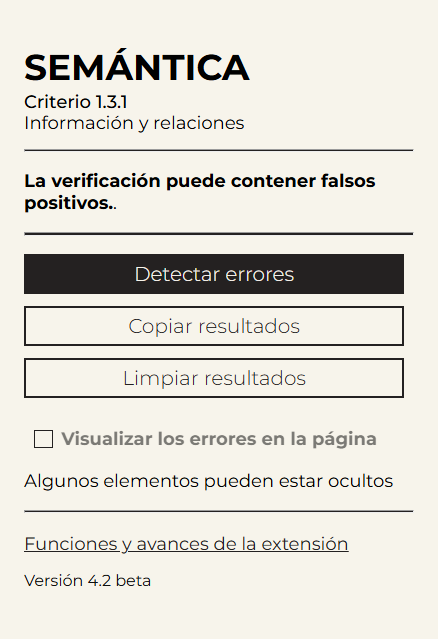

Extensión en Fase Beta aún en desarrollo / Beta version – still in development
This extension automatically evaluates common structures that violate WCAG 2.2, criteria 1.3.1: Info and Relationships, helping identify elements that may interfere with assistive technologies' interpretation of page semantics.
By clicking the download link, the extension is automatically downloaded.
Download ExtensionThe extension weighs only 140 KB and is distributed in .zip format. Simply unzip and install it manually from chrome://extensions.
This is an actively developed beta version. While it provides useful results, false positives or partial interpretations may occur. Manual verification is strongly recommended to validate the reported issues.
This tool detects common semantic issues, including:
Each error includes a small code snippet to help you locate and inspect the problematic element.
Some elements may not be properly marked if they are hidden via CSS. The classes (activated by checking the checkbox) used to search the code are:
Results are grouped by error type, each within a collapsible block. Every block includes:
You can also activate in-page visualization, which highlights all problematic elements using color-coded styles based on the error type.
For a complete explanation of this WCAG criterion, visit the official documentation: Criteria 1.3.1 (WCAG2.2)
This extension is under active development. If you find bugs, false positives, or have suggestions for improvements, please send your feedback to: emilianomontani@gmail.com
I hope this tool helps you in your daily work. "Muchas gracias" for your support and collaboration!
Esta extensión evalúa automáticamente estructuras comunes que infringen el criterio 1.3.1: Información y Relaciones de las WCAG 2.2, facilitando la identificación de elementos que podrían afectar la interpretación semántica del contenido por parte de tecnologías de asistencia.
Al presionar sobre el enlace, la extensión se descarga automáticamente.
Descargar ExtensiónLa extensión pesa 140 KB y se distribuye en formato .zip. Solo es necesario descomprimir e instalarla manualmente desde chrome://extensions.
Esta es una versión en desarrollo activo. Si bien ofrece resultados útiles, podrían producirse falsos positivos o interpretaciones parciales. Se recomienda verificación manual adicional como respaldo. Se recomienda realizar una verificación manual para confirmar la validez de los errores detectados.
La extensión detecta los siguientes errores semánticos comunes:
En cada error, se muestra un fragmento del código para facilitar su localización y revisión.
Algunos elementos al estar ocultos por CSS pueden no marcarse adecuadamente. Las clases (se activan al presionar la casilla de verificación) que se utilizan (para buscar en el código) son:
Los resultados se presentan organizados por tipo de error, dentro de bloques desplegables. Cada bloque incluye:
También podés activar la visualización directa en la página, que resalta todos los elementos con error usando colores distintos por tipo.
Para una explicación completa del criterio 1.3.1, consultá la documentación oficial: Criterio 1.3.1 (WCAG2.2)
Esta extensión se encuentra en desarrollo activo. Te agradecería enormemente que la probaras y Si encontrás errores, falsos positivos o tenés sugerencias, escribime a: emilianomontani@gmail.com
¡Espero que esta herramienta te sea útil en tu trabajo diario! Muchas gracias por tu colaboración